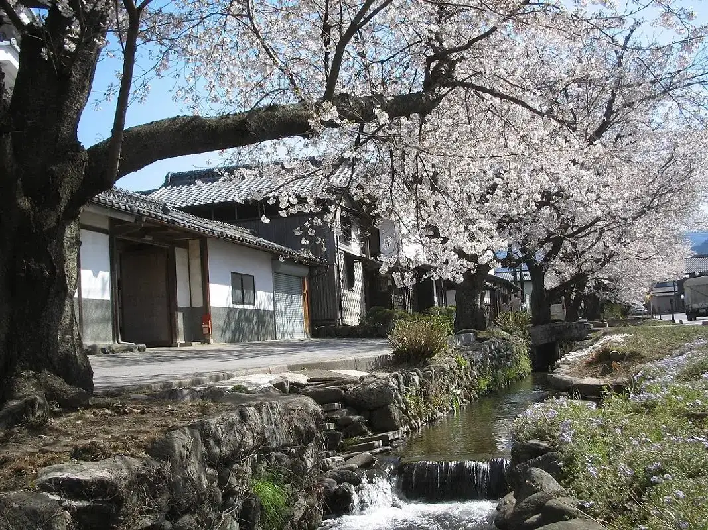
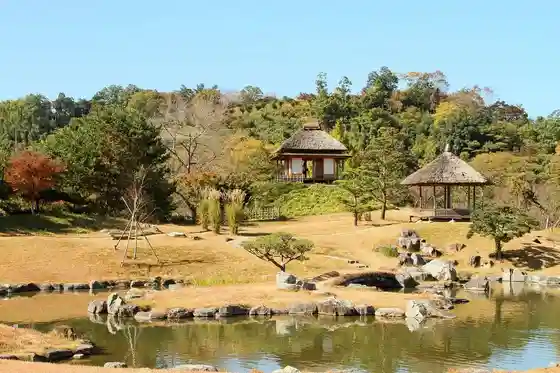
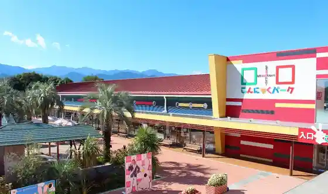
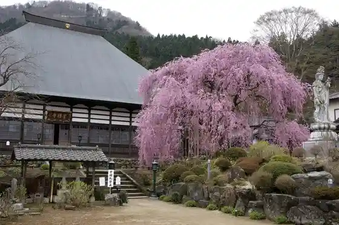
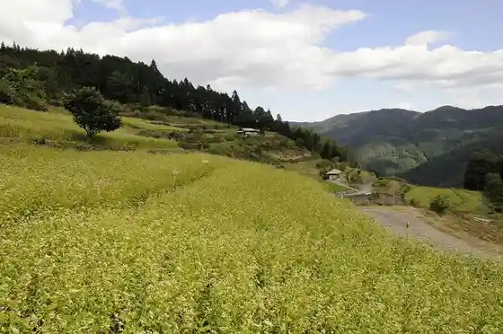

Kanra
Kanra · Gunma
Kanra
Highlighted on the Gunma map.

Sights
Kuni Shitei Meisho Rakuzan Sono

(Kabu) Yokodeiriifuzu Konnyaku Park

Castle Town Obata
Hoshaku Tera

Aki Hatachi Ku Soba Hatake

Roadside Station Kanra
Ogawa Seki
Kanra General Park